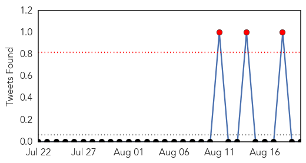

30 Day Trends
Web: 0 alerts, 0 warnings
Twitter: 3 alerts, 0 warnings
Top Articles:
- 0.997
- Common flu symptoms, consult expert, say doctors
- 0.959
- Can An Army Of Genetically Engineered Mosquitoes Stop Dengue Fever?
- 0.933
- Dengue fear sparks exodus in Kanpur
- 0.920
- Health Minister holds review meet on prevention of dengue in Delhi
- 0.850
- Health Ministry working to dispel myths surrounding transmission of mosquito borne diseases
- 0.791
- Health Secretary reviews preparedness on Dengue Malaria in Delhi
- 0.789
- Delhi's civic agencies asked to spread awareness on dengue
- 0.696
- Disease-carrying mosquitoes, biting ticks, poison ivy and ragweed: All will flourish with climate change
- 0.629
- Dengue fever claims two lives in Binh Duong - Viet Nam
- 0.540
- NDMC fines 4 Delhi hospitals for mosquito breeding : Mail Today, News
Top Tweets:
-
No tweets found for Aug 20, 2015
Web/News Articles

Tweets
Article Locations

Article Confidences